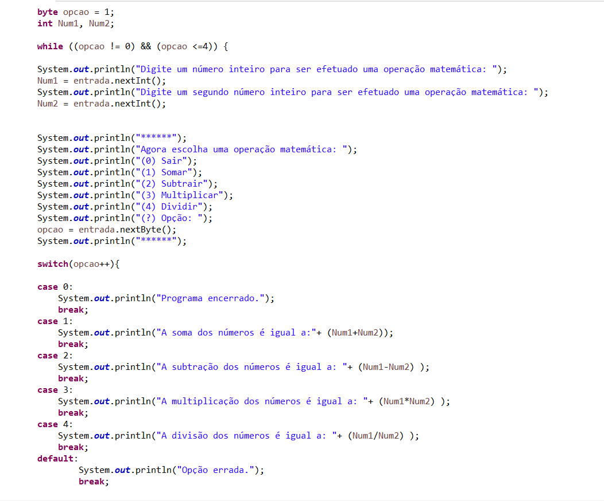
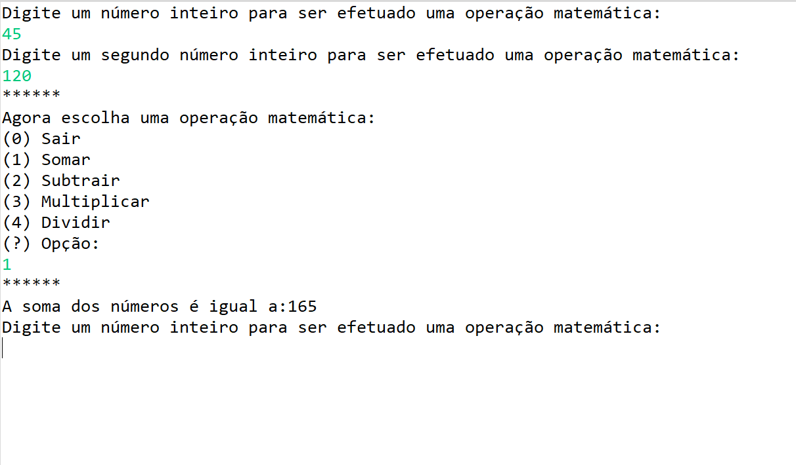
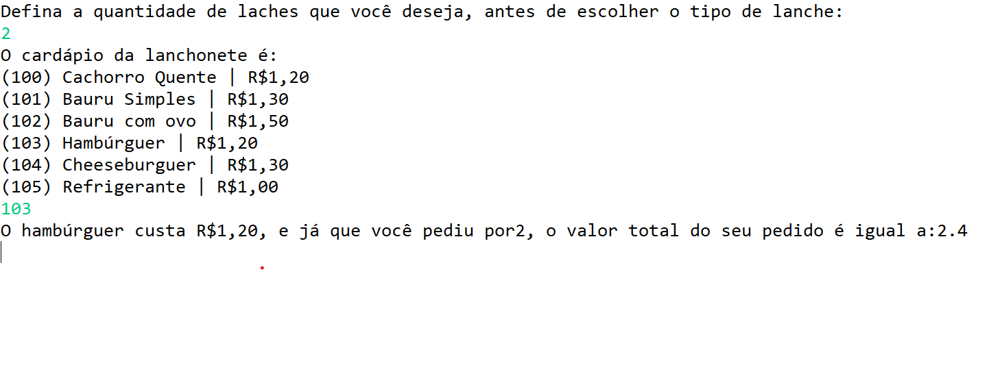
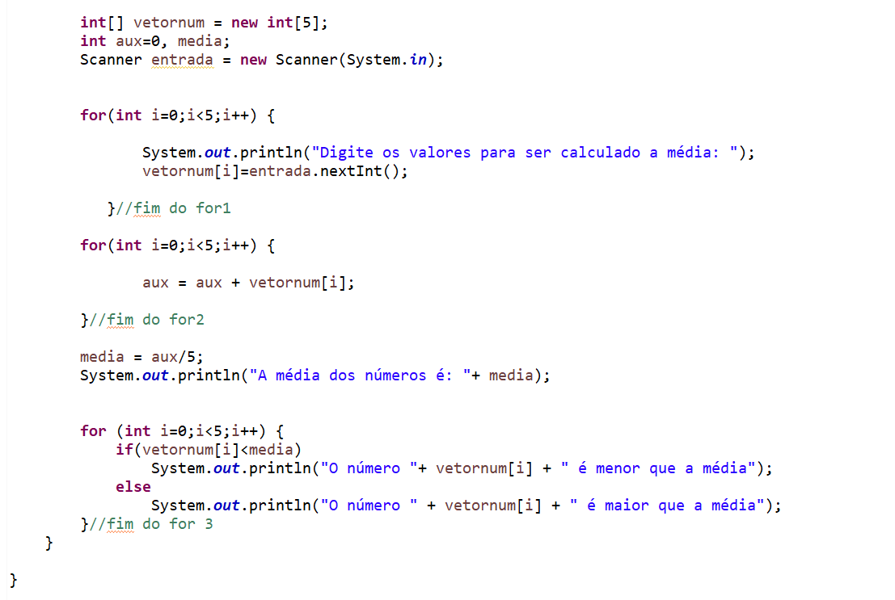
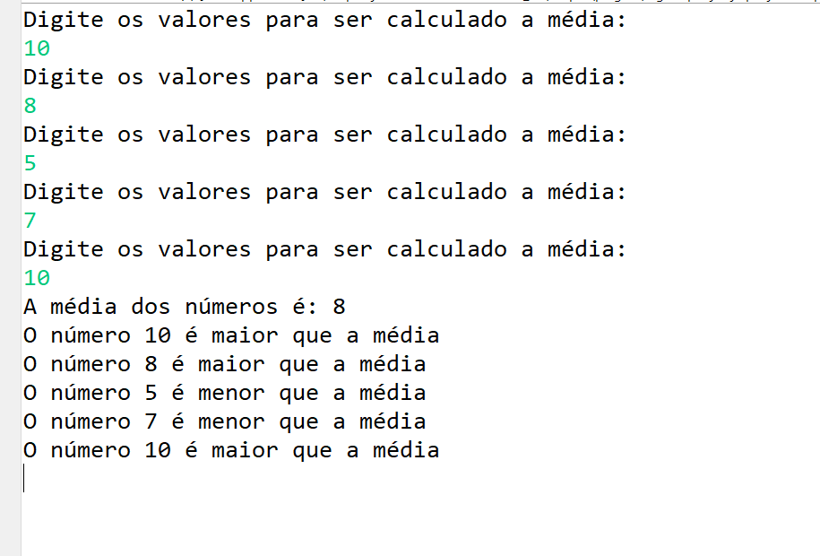
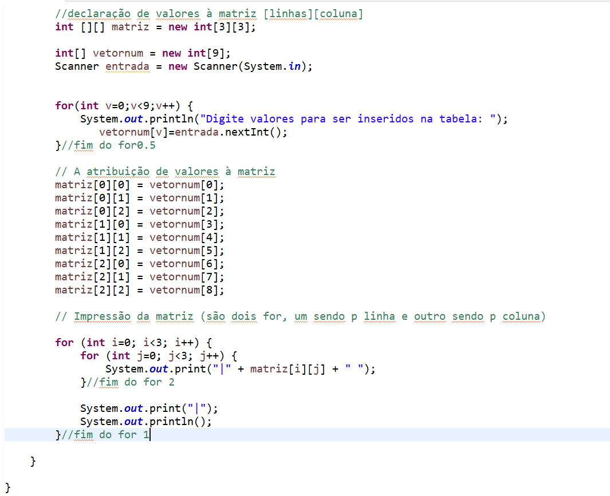
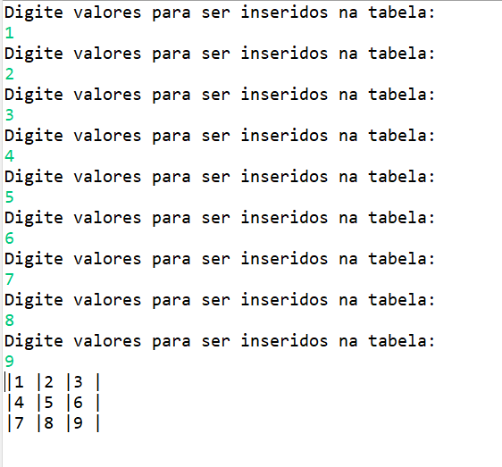
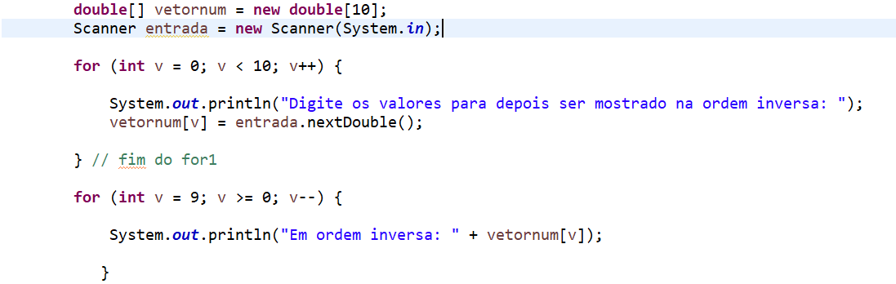
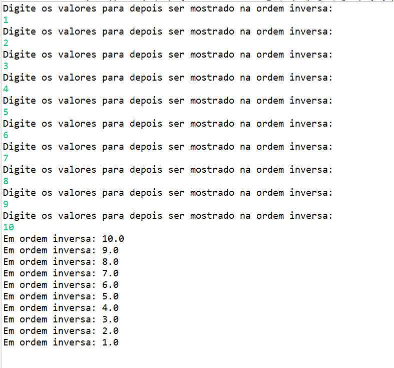

Atividades de FPOO
Estrutura "while" e "switch":
Nessa atividade o objetivo era receber do usuário dois números e efetuar alguma operação matemática. Inicialmente usei o "while" para dizer que quando a opção do usuário for não igual a 0, representado por "!=", o programa vai realizar a conta que foi escolhido (os "cases" seriam as opções).
Programa:
Resultado:
Simulação de cardápio (while)
Seguindo uma lógica semelhante a atividade já exibida, esta era necessário receber do usuário a quantidade de lanches que ele desejaria, e multiplicar essa quantidade pelo tipo de lanche, que era exibido por códigos (usados para o "case").
Programa:

Resultado:
Uso do "for" e "if or else"
Foi pedido para calcularmos a média de determinadas notas, sendo essa a entrada de dados do programa, então assim fiz: calculei a média somando as notas e dividindo pela quantidade. Após isso, o exercício pedia que comparasse nota por nota com a média total, para esse resultado eu usei a estrutura de "for", para percorrer todas as notas, e usei o "if or else" para determinar se a nota seria ou não maior que a média.
Programa:
Resultado:
Introdução à matrizes
Nessa questão era necessário receber dos usuários valores para serem adicionados em uma tabela, que na programação no java chamamos de "matrizes". Ou seja, usei um "vetor", que armazena mais de um tipo de variável, e os adicionei em uma "matriz", apresentada como "matriz[0][0] = vetor[posição]", sendo os valores dentro dos colchetes, respectivamente, linhas e colunas. Feito a tabela, eu a imprimir usando um "sysout" para as linhas e outras para as colunas.
Programa:
Resultado:
Ordem inversa usando vetores
Inicialmente recebi números reais do usuário, usando o "for" para exibir a mensagem e receber a entrada de dados, e já que o exercício pedia que fosse mostrado o que foi inserido em ordem inversa, digitei as seguintes condições do for: (int v = 9; v >= 0; v--). Assim, determinei que os meu valores seriam no total 10 (está digitado 9, pois o java conta o número 0), e determinei que seria percorrido o caminho dos meu números, variante "v", de forma decrescente: ">=", que nada mais é do que iniciar como "v" e terminar em "0". Para finalizar a função do incremento, "i--", é usando para ordernar que o caminho seja decrescente.
Programa:
Resultado:
